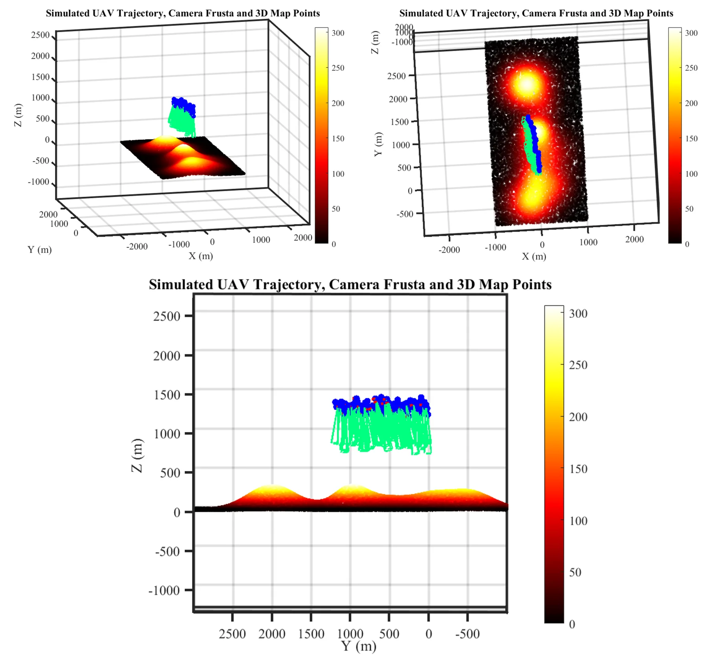
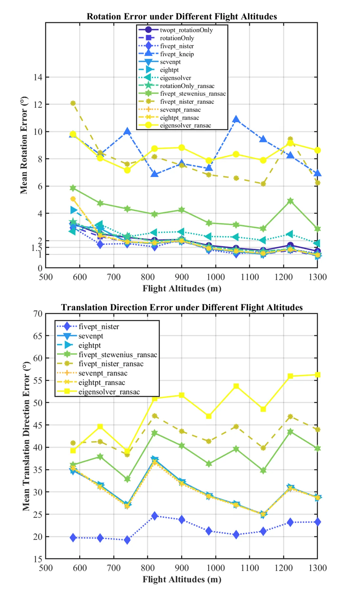
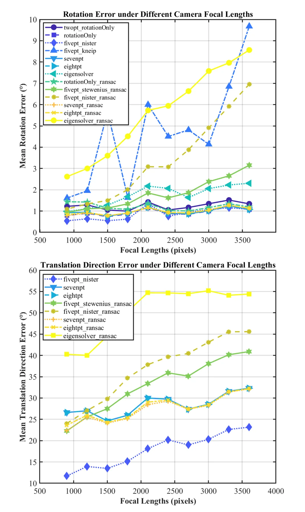
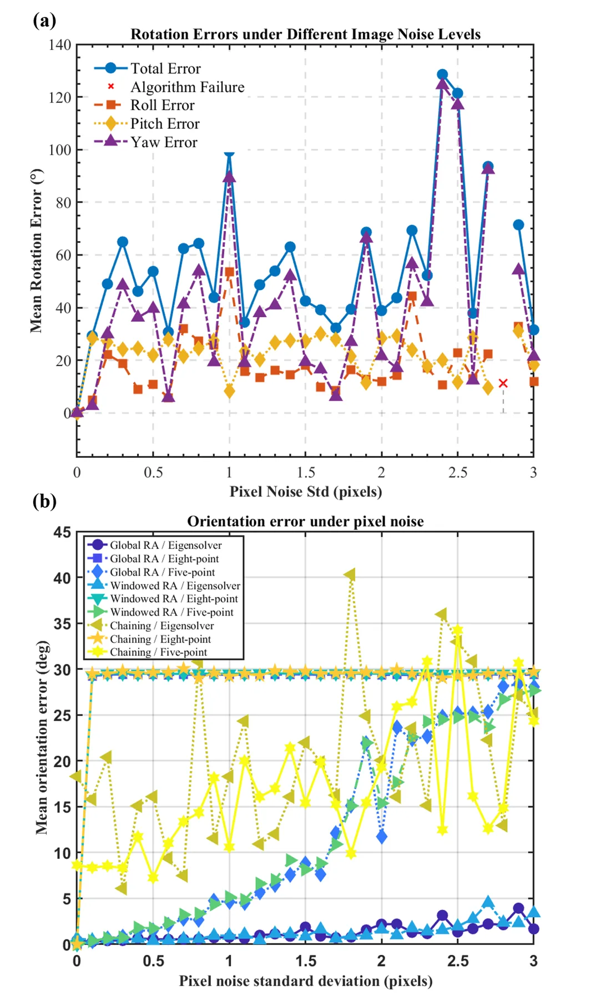
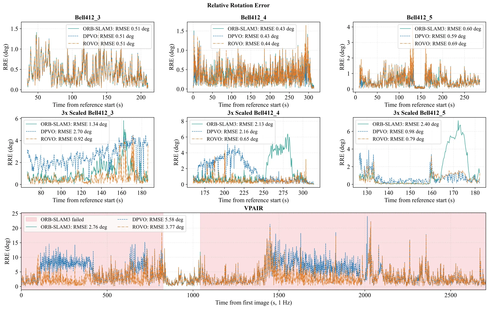

ROVO：只估旋转的无人机视觉里程计，在中低空把小视差变成优势
ROVO: Robust Rotation-Only Visual Odometry for UAVs at Low and Moderate Altitudes
一句话：既然小视差下平移方向不可观测，就干脆不估平移——只做相对旋转的多视一致选择与滑窗旋转平均，让深度不确定性没有通道传播到姿态。
RRE
coverage
orientation
runtime
作者、单位与技术谱系 · Research context
作者与单位
研究脉络
- Robust relative rotation averaging（Chatterjee & Govindu, TPAMI 2018）方法基座关系：问题形式借用：把成对相对旋转的一致化写成稳健旋转平均，本文在其上加了滑窗与跨窗对齐。[ROVO §2.2/§3.5 与参考文献 [5]]
- Rotation-only bundle adjustment / HARA（Lee & Civera, CVPR 2021/2022）研究上游关系：思路接续与工具借用：旋转-only 状态与分层稳健旋转平均被用作初始化与精化的参照。[ROVO §2.2/§3.5.3 与参考文献 [19][20]]
- 高空单目视觉-惯性初始化（Liu & Shen, ICRA 2017）问题来源关系：应用背景：高空/远距离下平移退化是既有观察，本文把它作为设计前提。[ROVO §2.1/§4.4 与参考文献 [24]]
合作网络
- ROVO 作者组 ↔ NUDT 两个单位College of Aerospace Science and Engineering → Hunan Provincial Key Laboratory of Image Measurement and Vision Navigation关系：同址双署名[arXiv 官方 HTML 首页]
- ROVO ↔ github.com/sssxxxkkkk/ROVOAuthor group → https://github.com/sssxxxkkkk/ROVO关系：论文声明的代码与仿真工具地址[arXiv 摘要与官方 HTML]
- ORB-SLAM3 / DPVO ↔ ROVO 评测ORB-SLAM3, DPVO → ROVO 对照实验关系：评价对象（同数据同指标）[ROVO §5.2–§5.4 与表 2/3]
作者与双单位署名取自首页，代码地址取自摘要；技术接续取自 §2 与参考文献。论文未标通讯作者，未据邮箱推断角色，也未核查仓库实现是否与论文一致。
方法本质拆解 · What actually changed
不训练，纯几何管线
整个系统是 SIFT + 多视几何 + 旋转平均，没有任何学习组件，也不存在权重更新。所有改进都在求解器选择、候选验证与融合规则上，因此它的行为可以用几何条件（基线、视场、噪声）来预测。
状态空间本身就是约束
最关键的约束是把轨迹状态限制为 SO(3)：没有平移、没有地标深度，因此深度不确定性没有通道进入后续姿态。其余约束是工程性的：窗口内最多 10 个关键帧、步长 1；对齐阈值 τalign=4°、σalign=3°；融合 σfuse=4°，信息比上限 Imax=4，修正量有界。
窗口更新 + 一次对齐一次融合
推理时每个新帧与缓冲关键帧匹配、生成并验证候选、做联合选择；缓冲满时求解一次旋转图，然后通过共享帧把该窗口对齐到已有轨迹，并按信息权重做一次有界融合，再滑动窗口。没有全局 BA，也没有回环以外的重优化。
用「少估一个量」换稳健
它改变的不确定性是「平移方向不可观测带来的姿态污染」：把这些量从状态里删掉，姿态误差就不再经由深度回流。局部结果靠重叠窗口与旋转平均接成全局朝向；它没有做的是定位与尺度恢复，因此只能作为姿态子系统。
输入是标定单目序列；改变的是状态定义（SE(3) → SO(3)）与候选选择/融合规则；动作为多视一致性选择 + 滑窗旋转平均 + 有界信息融合；直接效果是窄视场下 RRE 降 19.7–69.4% 且覆盖率达 99.1%。

桥接价值Bridge
桥接价值
这篇把「旋转可观测、平移在小视差下不可观测」这条几何事实直接变成系统设计，而不是靠调参去压制平移误差。对中高空、窄视场、以旋转为主的飞行场景，它给出一个只依赖朝向的状态估计器，可以作为视觉前端在平移退化时的兜底，也可以作为旋转-only 因子接进因子图给 IMU 或 GNSS 姿态做外部约束。对做多传感器融合的人来说，它的桥接意义在于：把一个「不可靠的量」从状态里删掉，比给它加一个很大的方差更彻底。
方法与模块Method
方法摘要
流程是：SIFT 提取与匹配（对缓冲关键帧）→ 生成候选相对旋转（Nistér 五点与特征值求解器两路）→ 局部几何验证 → 基于历史视图一致性的联合选择（Hybrid Join 在两者都通过验证时按几何支持挑更可信的一个）→ 关键帧判定 → 滑窗旋转平均（图结构 + 稳健初始化与精化）→ 用共享帧把窗口对齐到已有轨迹 → 有界信息加权融合更新已存朝向。状态里只有 SO(3)，没有平移、没有地标，因此不初始化三维地图也不估尺度。
可迁移模块
可迁移的第一件是「候选解 + 多视一致性选择」：不固定单一求解器，而是让两路候选同时存在、用历史视图的一致性来裁决，这在窄视场/低纹理时比固定求解器稳。第二件是有界信息加权融合——新窗口的估计与已存朝向按信息权重结合，并给修正量设上界，避免直接覆盖导致历史信息被一次坏窗口抹掉（消融里 Overwrite 在所有飞行条件下都更差，窄视场下差距最大）。第三件是把「旋转-only」做成因子：只输出相对朝向与不确定性，天然适配因子图。

证据Evidence
关键证据与数字
原始 Bell412 三条飞行上 ROVO 的 RRE RMSE 为 0.511/0.444/0.687°，ORB-SLAM3 为 0.511/0.432/0.600°，DPVO 为 0.510/0.428/0.594°——即原始视场下并不占优。把焦距乘 3（窄视场）后 ROVO 为 0.918/0.652/0.789°，比两者中更优者低 31.3%/69.4%/19.7%；VPAIR 上覆盖 2,681/2,706 帧（99.1%），自有配对 RMSE 3.767° 对 DPVO 5.583°（降 32.5%），共同配对 2.631° 对 2.639°（ORB-SLAM3 2.761° 但只覆盖 8.0%）。仿真在 3 px 噪声下：链式累积 25.12°、滑窗旋转平均 3.39°、全局旋转平均 1.68°。
边界与下一步Limits & Next Step
边界与风险
它是纯旋转估计器：没有平移、没有尺度，不能单独完成定位，也不能直接替代 VO/SLAM，只能作为姿态源或约束项。实现是 MATLAB R2023b，论文报的 8.6 ms 是「每次窗口更新」在 i5-12600KF 上的耗时，不是端到端帧率，工程化后需重测。窄视场条件是把原始图像按 3× 焦距重投影得到（相机位置与基线不变），属于合成退化，不等于真实窄视场吊舱飞行。VPAIR 的真值来自数据集发布的 GNSS/INS 姿态，其自身精度上限未知；另外原始焦距下它并不优于 ORB-SLAM3/DPVO，收益只在视场变窄或高度升高时出现。
下一步实验
第一步是把 ROVO 的旋转因子接进我们现有的因子图，与 IMU 预积分姿态、GNSS 双天线航向做三方对照，看它在卫星遮挡或动态场景下能否提供独立的姿态冗余。第二步是在我们自己的窄视场/高空数据上复现「焦距 ×3」这类退化条件，用真实吊舱数据验证合成结论是否成立。第三步是把「候选选择 + 有界融合」移植到 C++ 前端并测端到端时延与内存，再决定它是否值得作为独立模块维护，或只借用其中的融合策略。







